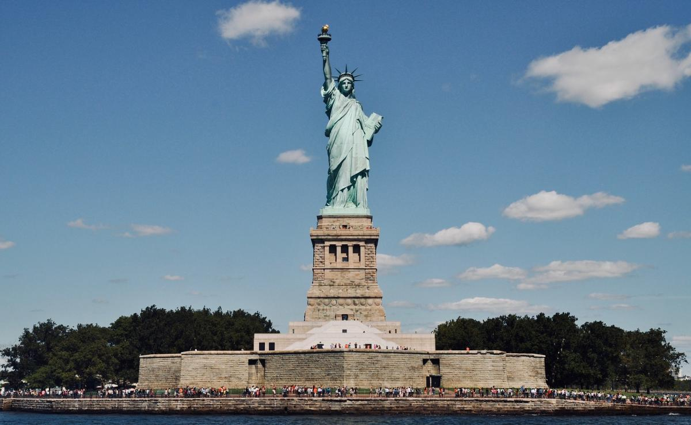
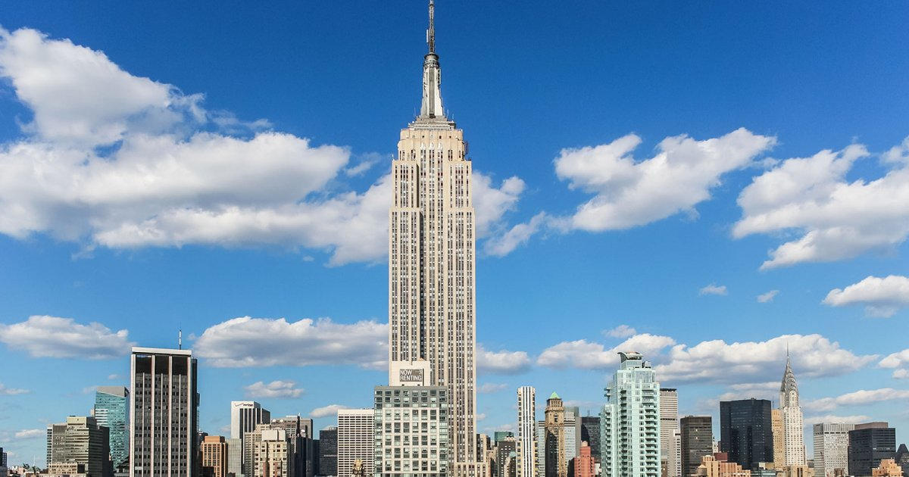
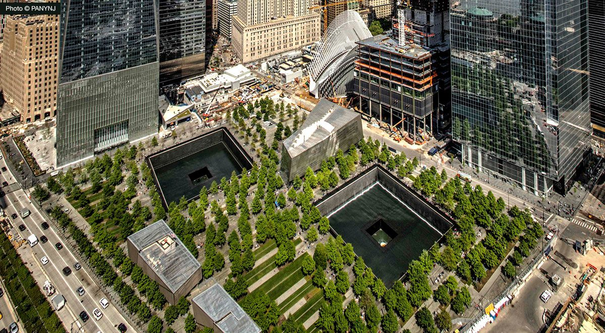

| Estatua de la Libertad |
 |
| Es el monumento más icónico de la ciudad de Nueva York. Por decenas de años, ha sido un punto de referencia para turistas e inmigrantes que llegan por barco. Se encuentra en Liberty Island, al sur de Manhattan. |
| Times Square |
 |
| Es un punto de intersección entre Broadway y Seventh Avenue. Sus rascacielos, taxis amarillos, pantallas publicitarias y deslumbrantes portadas son hipnotizantes. |
| Empire State |
 |
| Es uno de los edificios más visitados del mundo. Fue nombrado el destino turístico más popular de Nueva York en un estudio realizado por Uber. Desde ahí aprecian una de las mejores vistas 360° de la ciudad, ya sea de día o de noche. A los lugareños les gusta quedarse en el lobby Art Deco antes de dirigirse al mirador. |
| Central Park |
 |
| Central Park limita al norte con Central Park North, al sur con Central Park South, al oeste con Central Park West y al este con Fifth Avenue. Tiene cerca 26 mil árboles, 9 mil bancas, 50 fuentes, monumentos y esculturas, 36 puentes y arcos. |
| Memorial 9/11 |
 |
| El 9/11 Memorial & Museum fue construido para rendir homenaje a las víctimas fallecidas en los atentados terroristas del 11 de septiembre de 2001 que derrumbaron las Torres Gemelas. Está ubicado en la calle Albany 1 |